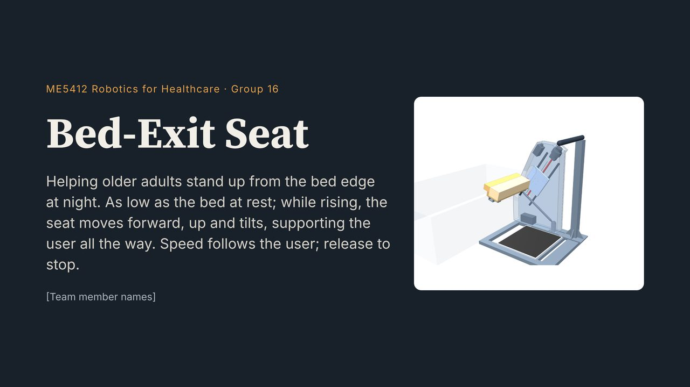
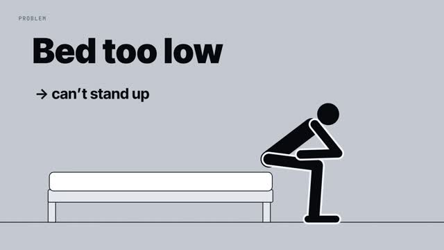
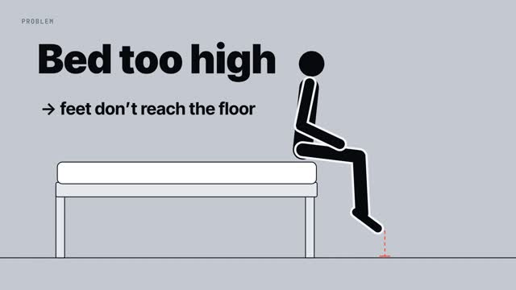
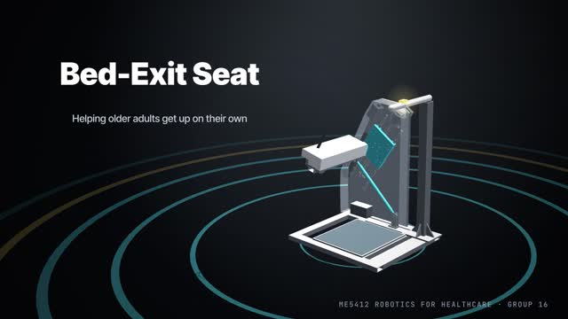
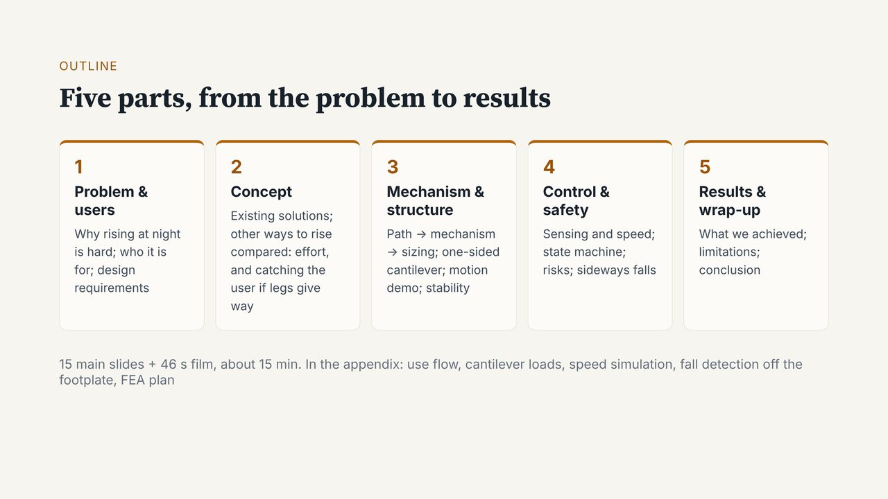
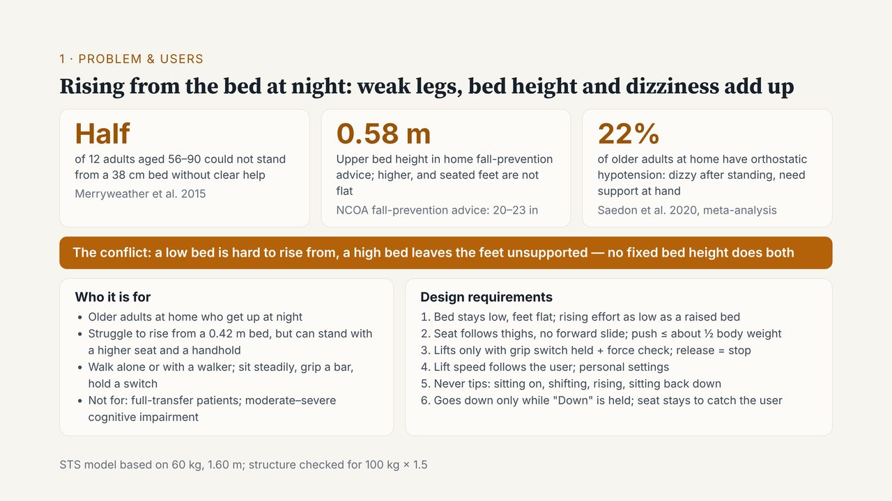

ME5412 · Group 16 · Bed-Exit Seat
全场 15 分钟。各段比例按仓库里英文讲稿的字数估算（每分钟 130 词），第五部分已由队友另改，仅供参考。
先想清楚
“No fixed bed height does both.”
床低了，站不起来；床高了，坐着时脚踩不实。一张床只有一个高度，所以两头顾不全。你下台的时候，全场要记住的就是这一句。
原因很直接：后面四位讲的机构、控制、结果，全都是在回答这个矛盾。听众记住了它，后面每一页都有地方挂；没记住，后面讲得再好，也像在解一道没人出的题。
这页最容易讲成“念三个数”。其实每个数字都在逼出一条设计要求，你心里要有这条线，停顿和重音才会落在对的地方。
Half
12 人，38 cm 的床
Merryweather 2015
床低的时候，腿要出的力更大；一半人不靠明显的帮助就站不起来。
起身那几秒，身下的支撑要更高。
0.58 m
NCOA 建议 20–23 英寸
床再高，坐在床沿时脚就踩不平，坐不稳。
坐着的时候，床面要够低。
22%
居家老人，体位性低血压
Saedon 2020
站起来以后血压会掉一下，人可能头晕。这件事和床高无关，发生在站起来之后。
手边一直有东西扶，身后一直有东西接：横杆、松手就停、座板停在原处。
表中前两列是幻灯片上的内容。第三列和中间那条“拆开两个高度”，是我按整套设计归纳的讲法，和封面那句 “As low as the bed at rest; while rising, the seat moves…” 一致。
怎么练
背词容易在台上断，是因为背下来的句子是一条链：每个词靠前一个词勾出来。台上一紧张丢了一个词，后面整串都出不来。背得越熟，链越长，断的时候越彻底。
换一种记法就没有这个问题：每一拍只记要送到的东西（一个数字，加上它意味着什么），句子每次现组。下面每句都给了三种说法，不是让你背三套，而是让你看到同一个意思可以怎么换着说。每遍抽到的说法不一样，脑子就只能去记意思。
四个数：Half of twelve、38 cm、0.58 m、22%
限定词：without clear help
产品名：Bed-Exit Seat
落点句：No fixed bed height does both.
句子怎么开头、用哪个动词、先说数字还是先说结论、一句说完还是拆成两句。
这些说错了、说得不漂亮都没关系，观众听的是数字和结论。
练到什么程度算够：连续三遍，每遍用词都不完全一样，但四个数字、限定词和落点句都说对了。到这里就停。继续练到一字不差，反而又变回背词。
怎么读台本
高亮 重读，放慢 / 短停，半拍 // 长停，约 1 秒，看观众 蓝字 = 导演提示，不出声
台本

（不出声，2 秒）
站在屏幕左侧，身体正对观众。等全场安静，和后排的人对上一眼，再开口。开口太急，第一句会被噪声吃掉。
必到Group 16
Hello everyone, / we are Group 16. //
Hi everyone. / This is Group 16. //
Hello, and welcome. / We are Group 16. //
意思：大家好，我们是第 16 组。
必到Bed-Exit Seat，三个词分开说
Our project is the Bed-Exit Seat. //
Today we present the Bed-Exit Seat. //
We designed a device called the Bed-Exit Seat. //
意思：我们的项目是床边起身台。
这是全场第一次听到这个名字，后面二十几页都在用它。说完停一秒，让名字落地。
必到older adults · weaker legs · bed edge · at night
It helps older adults with weaker legs / stand up from the bed edge / at night. //
It is for older adults whose legs are getting weaker. / It helps them stand up from the bed edge at night. //
At night, / standing up from the bed edge is hard for older adults with weak legs. / Our seat helps them do it. //
意思：它帮腿力变弱的老人，夜里从床沿站起来。
整场的一句话简介：谁、做什么、什么时候。四个要点到了就行，顺序随你。不要再补充幻灯片上那段副标题。
必到46-second film，说完再点播放
First, / please watch a 46-second film.
Let’s start with a short film. / It takes 46 seconds.
Before the details, / here is a 46-second film.
意思：先请看一段 46 秒的短片。
说完这句再点播放。边说边点，片头的声音会盖住你最后几个词。



（点一下播放，然后 46 秒不出声）
往屏幕侧面退半步，身体转向屏幕，自己也看片子。你看哪里，观众就看哪里；你低头看稿，观众会跟着走神。不碰电脑，不小声解说。
0:05 和 0:07 · 记住这两幅画面
“Bed too low → can’t stand up” 和 “Bed too high → feet don’t reach the floor”。你 Problem 页的第一句接的就是它们。
0:40 · 雨停，人站起来
这是收尾的信号。手回到翻页器上，重心移回正对观众的位置。
必到一句过渡，把观众从片子里带回来
Now / let’s go through each step.
That was the whole idea. / Now, the details.
So that is the idea in 46 seconds. / Let’s look at it step by step.
意思：下面我们一步一步讲。
等音乐收完，再多等 1 秒，然后转回观众说，说完翻页。抢在音乐里说话，观众还没从片子里出来。
兜底 · 片子放不出来
黑屏或没声音超过 5 秒就不等了，不道歉，用自己的话说出下面这个意思，然后翻页。内容和片子开头、结尾的字幕一致。
The film shows one thing: a bed that is too low is hard to stand up from, and a bed that is too high leaves the feet off the floor. Our seat stays as low as the bed, and rises with the user.

必到five parts：problem → comparison → mechanism → control & safety → results
The talk has five parts: / the problem and users, / a comparison of solutions, / the mechanism, / then control and safety. // We finish with results and a short wrap-up. //
We have five parts. / First, the problem and the users. / Then we compare existing solutions. / Then the mechanism, / and control and safety. // Last, results and a short wrap-up. //
Here is our plan, in five parts: / who has the problem, / how others solve it, / how our mechanism works, / how we keep it safe, // and what results we got. //
意思：共五部分：问题和用户、方案比较、机构、控制与安全，最后是结果和总结。
手从左往右划过五个框，每说一项手停在对应的框上。框上的标题就是你的提词，照着顺序说，不用背。
必到可选：告诉观众现在从第一格开始
I’ll start with the problem.
Let me begin with the problem.
Part one: / the problem.
意思：我先讲问题。
这半句是我加的，原备注没有。全场时间紧就删掉它，直接翻页。

1 2 3 4 5 6必到three numbers
Behind the film / are three numbers. //
The film showed the problem. / Three numbers explain it. //
Why is this a real problem? / Three numbers. //
意思：片子背后有三个数。
对着观众说，先不指屏幕。这句是承诺：接下来正好三个，观众会跟着数。
必到Half · of twelve · 38 cm bed · without clear help
Half of twelve older adults / could not stand from a 38-centimetre bed / without clear help. //
In one study, / twelve older adults tried to stand up from a 38-centimetre bed. / Half of them could not do it without clear help. //
Number one: / half. // From a bed 38 centimetres high, / half of twelve older adults needed clear help to stand up. //
意思：12 位老人里，一半人从 38 厘米高的床上，不靠明显的帮助站不起来。
“Half” 单独一拍。“twelve” 要说清，这是主动交代样本小，比被人追问时再承认好得多。
必到0.58 m · 是建议的上限 · 再高 → feet not flat
Fall-prevention advice says / a bed should be at most about 0.58 metres; / any higher, / and the feet are not flat when seated. //
So should we just raise the bed? / Only up to a point. // Fall-prevention advice puts the limit at about 0.58 metres. / Above that, the feet are not flat on the floor when you sit. //
Number two: / 0.58 metres. // That is the highest bed that fall-prevention advice recommends. / Go higher, / and the feet are not flat when seated. //
意思：防跌建议说床高最多约 0.58 米；再高，坐着时脚就踩不平。
读作 “zero point five eight metres”。数字和后果之间顿一下，把后果单独送出去。
必到22% · older adults at home · dizzy after standing · support at hand
And about 22% of older adults at home / have orthostatic hypotension: / they may feel dizzy after standing, / so support must stay at hand. //
The third number is about what happens after standing. // About 22% of older adults at home have orthostatic hypotension. / They may feel dizzy, / so they need something to hold. //
Number three: / 22 percent. // That is the share of older adults at home whose blood pressure drops when they stand: / orthostatic hypotension. / They may feel dizzy, / so support must be within reach. //
意思：约 22% 的居家老人有体位性低血压：站起来后可能头晕，所以手边一直要有支撑。
观众真正要听懂的是 “dizzy after standing”。术语卡住了就用说法 C 里的解释 “blood pressure drops when they stand”，意思不丢。
必到前两条合起来 · low 难站 · high 脚没支撑 · 原句：No fixed bed height does both.
Put the first two together: // low is hard to rise from, / high leaves the feet unsupported. // No fixed bed height does both. //
Now look at the first two numbers. // A low bed is hard to stand up from. / A high bed leaves the feet unsupported. // No fixed bed height does both. //
So here is the conflict. // To stand up, / you want a high bed. / To sit with your feet flat, / you want a low one. // No fixed bed height does both. //
意思：把前两条放在一起：低了难站起来，高了脚没支撑。没有哪个固定床高能两头兼顾。
全段的落点，也是全场唯一要原样背下来的一句。它就印在橙色横幅上，忘了就照着念。手落在横幅上，转回观众，语速降到一半。说完手放下，安静 1 秒再往下走。
必到still walk（alone / walker）· 从普通床站起来 hard
Our users can still walk, / alone or with a walker, / but find rising from a normal bed hard. //
Who is this for? // People who can still walk, / alone or with a walker. / Their problem is standing up from a normal bed. //
Our users are not bedridden. / They walk, some with a walker. // What they cannot do easily / is rise from a normal bed. //
意思：我们的用户还能走路，自己走或用助行器，但从普通床上站起来很吃力。
只指一下左下框。“不适用人群”那一行不讲，有人问再答。
必到six requirements · 结果 at the end
Results for the six requirements / come at the end. //
From this we set six requirements. / We will check each one at the end. //
These are our six requirements. / Keep them in mind: / the results come at the end. //
意思：这六条要求的结果，最后会给。
手在右下框上划一下即可，一条都不念。这句是给第五部分埋的钩子：结果页会逐条对回这六条。
必到队友名字 · existing solutions
Next, / 〔队友名字〕 compares existing solutions.
Now over to 〔队友名字〕, / who looks at existing solutions.
So what solutions already exist? / 〔队友名字〕 will show you.
意思：接下来，〔第二位同学〕讲现有方案。
交棒句是我加的，原备注没有。说完看向队友，由对方翻页。你往侧后退一步，不要挡屏幕。
台上
脑子全空时的 20 秒版 PROBLEM 页
Three numbers. Half of twelve older adults could not stand up from a low bed. 0.58 metres is the highest a bed should be. 22% feel dizzy after standing. So: low is hard to rise from, high leaves the feet unsupported. No fixed bed height does both.
这一版丢掉了用户和六条要求，但全场必须记住的东西都在。它只是保底，正常情况下不用。
和 PPT 备注的差别
每句的说法 A 最接近 PPT 备注原文，B 和 C 是我另写的换法，数字和结论都一样。相对原备注，Problem 页的说法 A 动了下面三处。仓库里的幻灯片和 PPT 备注我没有改。
改动 1 · 补上断掉的因果
…dizzy after standing. So one fixed bed height cannot do both.
Put the first two together: low is hard to rise from, high leaves the feet unsupported. No fixed bed height does both.
原词在“头晕”后面直接接“所以固定床高两头顾不全”。头晕推不出床高的矛盾，而且只听不看的人不知道 “both” 指哪两样。矛盾来自第 1、2 个数字，所以明说“把前两条放在一起”，并把两头各说一遍。
改动 2 · 给第 3 个数字一个去处
…so they may feel dizzy after standing.
…they may feel dizzy after standing, so support must stay at hand.
原词只说了会头晕，没说这对设计意味着什么，听起来像多出来的一个数。加半句，它就对上了幻灯片卡片上的 “need support at hand”，也对上后面的横杆和“松手就停”。
改动 3 · 和出处对齐
…without help.
…without clear help.
幻灯片和原始文献写的都是“不借助明显协助”。少一个 clear，意思就变成“完全没人帮就站不起来”，比研究的结论说得重。
代价是时间：Problem 页原备注约 44 秒，改后约 58 秒，再加停顿按 1 分钟算。第一部分合计约 2 分 20 秒，比原估计多 20 秒左右。全场如果超时，先删目录页的 “I’ll start with the problem.”，不要删停顿。
边界
读音
| 词 | 怎么读 | 注意 |
|---|---|---|
| Bed-Exit Seat | BED · EK-sit · SEET | 三个词分开；Exit 重音在前。 |
| orthostatic hypotension | or-thuh-STA-tik · hy-poh-TEN-shun | 重音在 STA 和 TEN。hypo- 是“低”，别读成 hyper-（高）。实在卡壳就说 “a drop in blood pressure on standing”。 |
| 0.58 metres | zero point five eight | 小数点后逐位读，不读 “fifty-eight”。 |
| 38-centimetre bed | thirty-eight SEN-ti-mee-ter | 作定语，centimetre 不加 s。 |
| 46-second film | forty-six SEK-und | 同理，second 不加 s。 |
| 22% | twenty-two per-SENT | percent 重音在后。 |
| walker | WAW-ker | l 不发音。 |
| requirements | ri-KWY-er-ments | 重音在第二个音节。 |
问答
前四条的依据都在仓库里的幻灯片和文献表中。第五条没有数据支撑，照实说。
A 0.58 m bed is within the advice. Why not just raise the bed?
That is our strongest competitor, and on effort it is about equal. Two differences. First, 0.58 metres is the top of the advised range, so for shorter users the feet are not flat. Second, if the legs give way, a bed catches you only at the very start of the rise. The next part shows this.
这是最该准备的一问，因为它正好戳在你的矛盾上。“省力差不多”“床只在起身最初约 15% 接得住”来自比较页。“矮个子在 0.58 m 脚踩不平”是按人体尺寸的推断，没有实测，被追问就照实说，然后把问题交给第二部分。
Twelve people — is that enough?
No. It is a small sample, and most of them had mobility limits. We use it as a direction — lower beds are harder — not as a prevalence figure.
先说 No 再解释，比辩解更可信。
Where does 0.58 m come from?
From NCOA home-safety advice: 20 to 23 inches, with the rule that the feet are flat and the knees at about 90 degrees when sitting on the bed edge. It is guidance, not a hard limit.
20–23 英寸即 0.51–0.58 m，幻灯片取的是上限。
Who cannot use it?
People who need a full transfer, and people with moderate to severe cognitive impairment. The user has to sit steadily, grip the bar and hold a switch.
幻灯片左下框最后一行。
Why night in particular?
At night the user has just woken up, it is dark, and often nobody is there to help. The device works the same way in the daytime.
这是常理，幻灯片上没有夜间跌倒的数据。不要现场编比例。
（问到机构、控制、安全的细节）
That is in part three / part four — my teammate will show it in a moment.
不是你的页就不要硬答。把问题接住、交出去，本身就是好的台风。
上台前
排练
点底部的“开始排练”，出声讲；每翻一页点一次“下一镜”。结束后这里显示每段和目标差多少。短片那段可以直接等 50 秒，或者真的放一遍。说法 B、C 比 A 多几个词，每段多出三五秒属于正常。
| 镜头 | 目标 | 你的用时 | 差 |
|---|---|---|---|
| 1 封面 | 0:15 | — | — |
| 2 短片 + 一句 | 0:50 | — | — |
| 3 目录 | 0:15 | — | — |
| 4 Problem + 交棒 | 1:00 | — | — |
| 合计 | 2:20 | — | — |